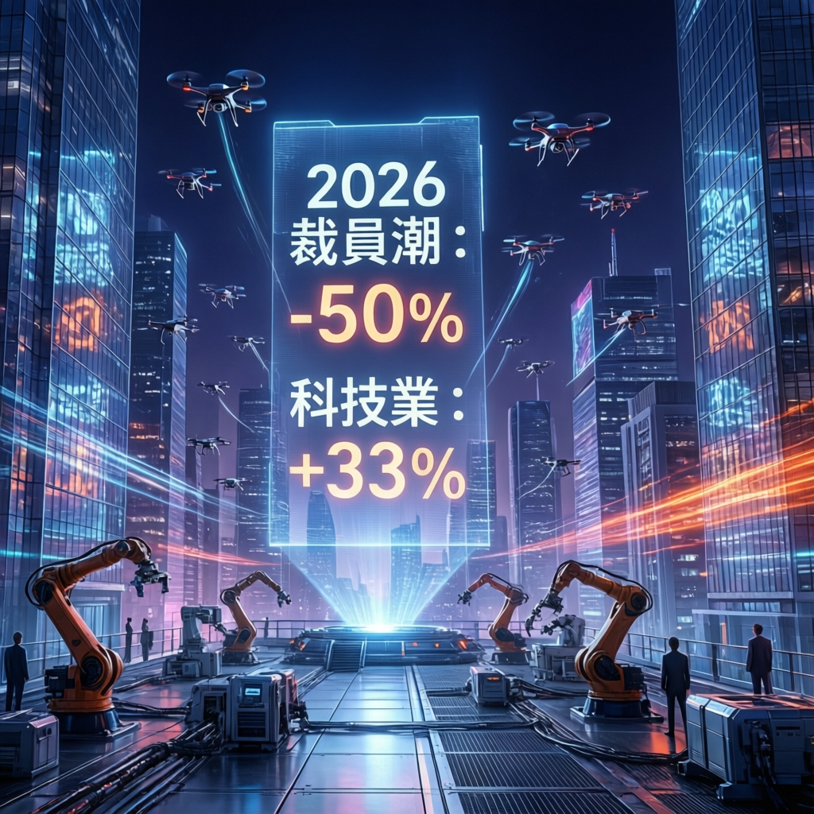

AI浪潮重塑職場版圖，白領主管職位面臨前所未有的挑戰，科技產業與傳統產業呈現兩極化發展態勢

本次報告揭示2026年美國就業市場出現顯著分化。數據顯示，全美整體裁員規模較前一年大幅減少50%，顯示宏觀經濟環境趨於穩定。然而，科技業卻呈現截然不同的景象，裁員人數逆勢增長33%，形成強烈對比。
研究指出，此現象反映出AI技術對產業結構的深層衝擊。傳統產業在經歷前幾年的調整後逐步回穩，而科技業則因技術迭代加速，正進行大規模的組織重組與人力優化。
專家分析強調，本次裁員潮的顯著特徵在於受影響群體的轉變。過去自動化主要威脅藍領勞動力，如今AI技術的成熟使白領工作，尤其是中階主管職位，成為新的衝擊目標。
AI並非單純取代人力，而是重新定義「必要人力」的邊界。能夠與AI協作的專業人才需求上升，而可被算法優化的職能則快速萎縮。
業界觀察顯示，科技企業的裁員策略具有明確的選擇性。大型平台企業持續精簡非核心部門，同時加大對AI研發人才的招募力度。這種「減量增質」的人力配置，標誌著產業進入效率優先的新階段。
研究人員進一步指出，此趨勢可能向金融、法律、諮詢等專業服務領域擴散。這些行業同樣具備高比例的白領管理職位，且工作流程具備數位化改造的潛力。
展望後續發展，專家預測職場將呈現三大走向：技術能力成為基本門檻、跨領域整合能力價值提升、以及終身學習成為職涯存續的必要條件。企業組織架構也將持續向敏捷化、專案化演進。
本次報告提醒，面對AI驅動的產業變革，個人與組織都需要重新評估競爭優勢的來源。能夠快速適應技術變遷、持續創造不可替代價值的勞動力，將在未來的就業市場中佔據主動地位。